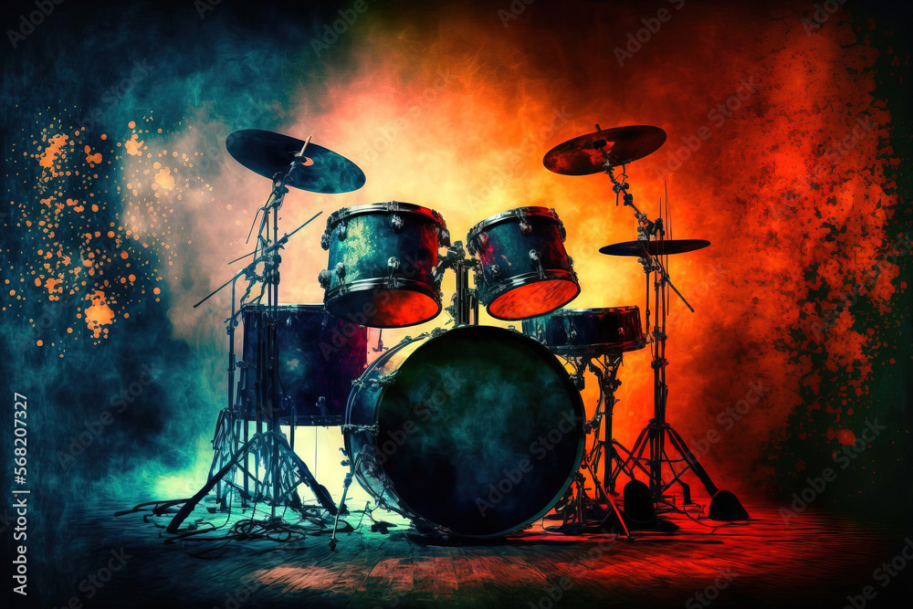

Як вже було сказано вище, сучасний барабан зазвичай складається з
корпусу, порожнистого всередині і з хорошими резонансними властивостями,
і натягнутої на нього мембрани. Мембрана може бути виконана з пластика
або (що дорожче) зі шкіри. Крім того, для гри на барабані знадобиться
одне калатало або дві палички.